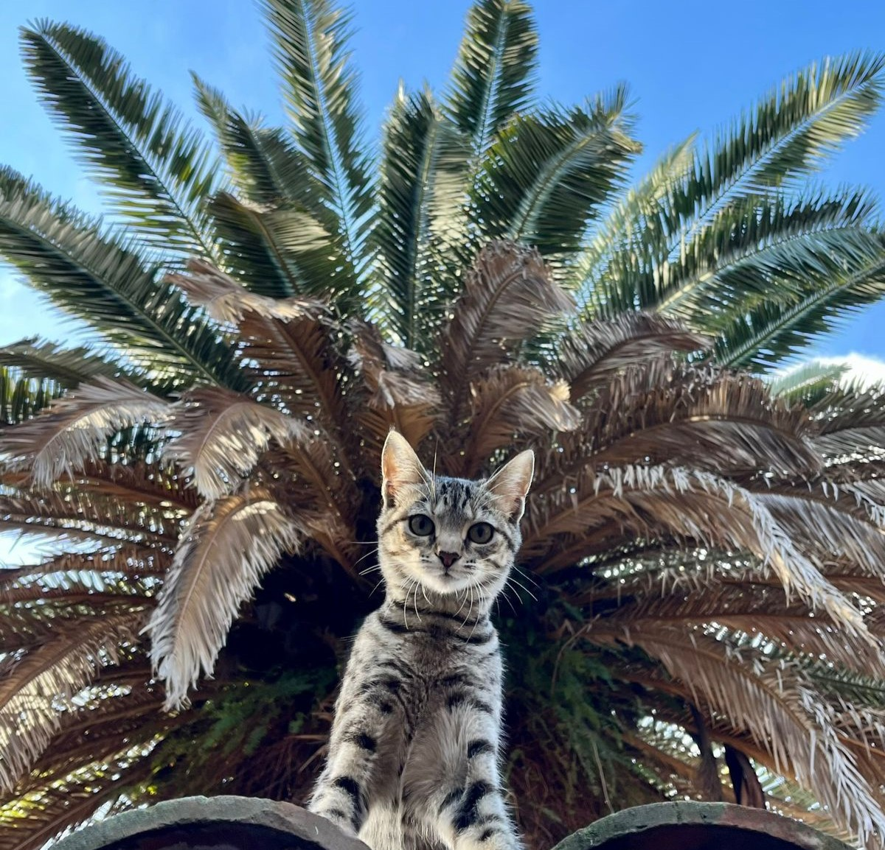
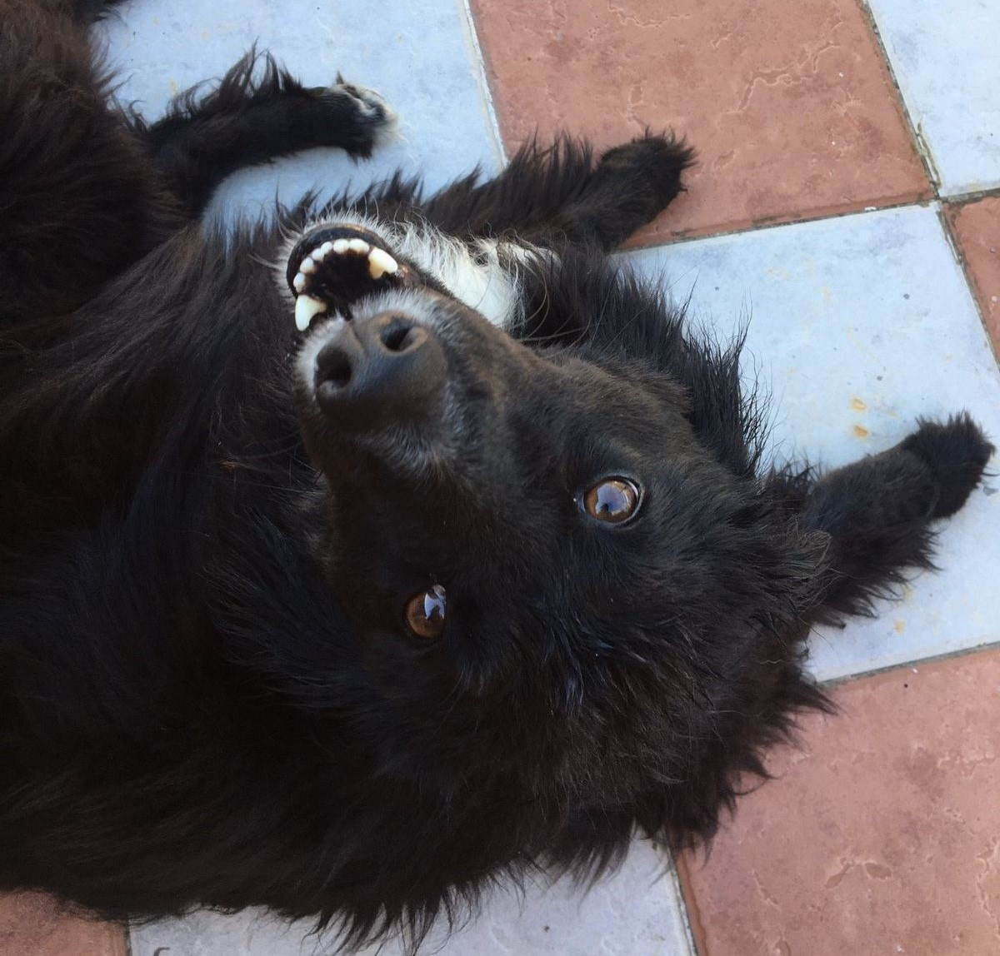
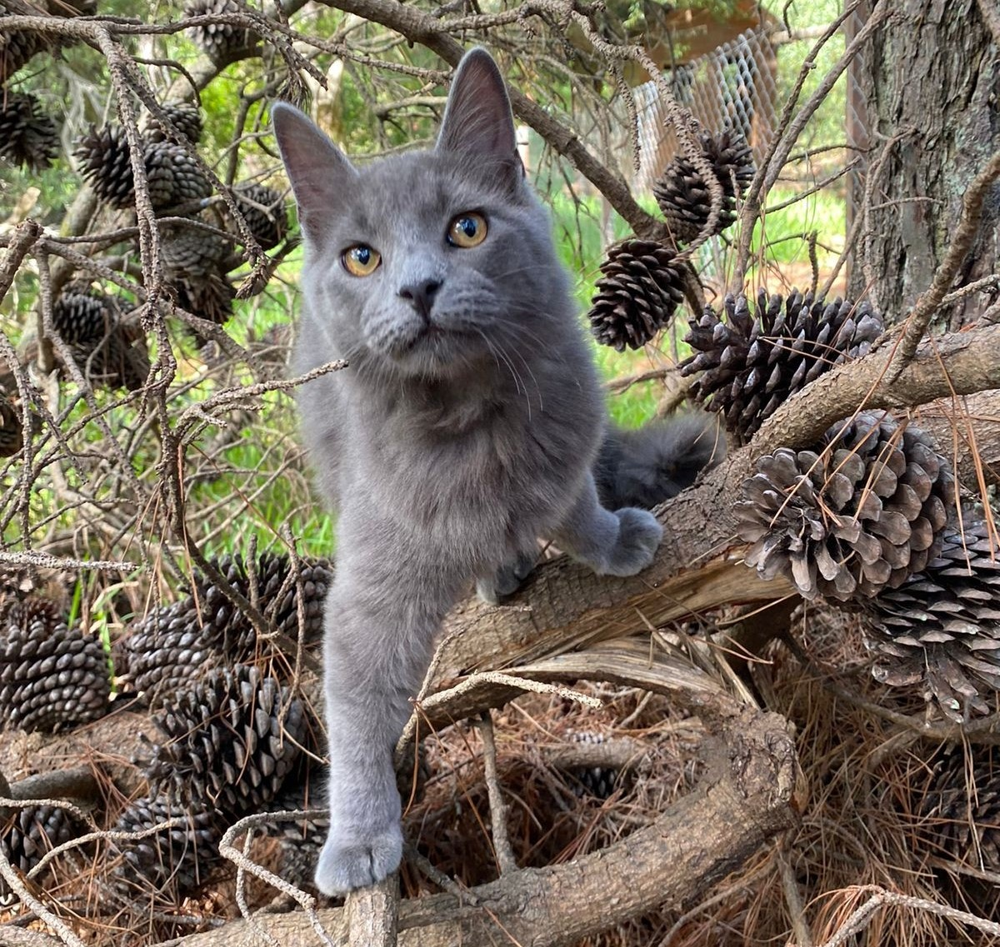

Huellas a Casa
Buscando un hogar que los ayude a dejar su huella
Adoptar es una gran forma de dar amor



Hay muchas formas de que tu casa se vuelva un hogar. No sólo se trata de las personas que la integran, sino también de la buena compañía, el cuidado y el cariño. Tampoco son sólo los humanos quienes lo buscan y lo necesitan, sino que también es vital para los animales. Con tantos de ellos viviendo en la calle y sin ningún cuidado, elegí hacer la diferencia. Elegí darles un lugar a los que tanto lo necesitan. Elegí darles un hogar para que puedan dejar su huella para siempre.